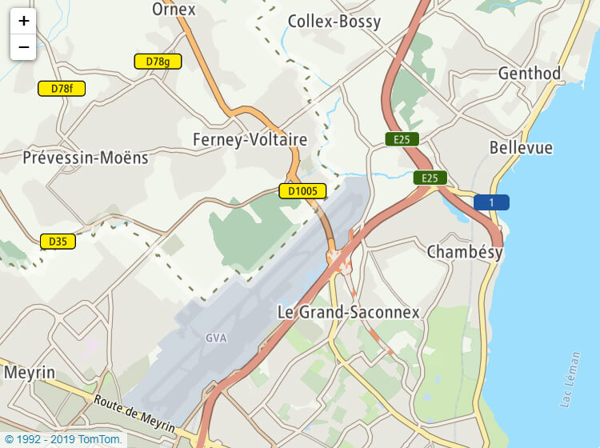

This report outlines the use cases and requirements
for standardizing modern Web maps,
in a way that works
for map content authors, webpage authors, and website users.
The use cases and requirements were gathered in
consultation with the Maps for HTML Community Group and others.
Three aspects of web maps are reviewed:
map viewer widgets,
client-side mapping APIs,
and
map data formats.
For each, evidence is gathered from widely-used scripted JavaScript web map frameworks.
The common features and limitations of the current techniques
are the basis of the requirements for a standardized solution
that could be built in to HTML and web browsers.
Comments, corrections, and suggested additions should be made as
GitHub issues.
If that is not possible, send an email comment to
public-maps4html@w3.org.
1. Introduction
1.1 The current state of web maps
Web maps today are indispensable to billions of people,
for exploring and understanding the world around them.
Like paper maps before them,
web maps are used for planning, wayfinding, analysis, and more.
But the power of an interactive, hyperlinked medium
supports a richer experience than could have been imagined
by a cartographer from a previous century.
Online maps can be dynamically redrawn with new data,
or according to the user's preferences.
They can connect to other maps —
for adjacent areas, finer detail, or different geographical features —
and can link out to complex information about the places they represent.
But despite their ubiquity on the web,
maps have no native, semantic representation in HTML.
HTML has had “image maps” —
hyperlinked graphics, where selecting different parts of the graphic triggers a different URL —
from its early days.
These were quickly adopted to
represent simple cartographic maps.
The <MAP> element
sounds like it should be the basis of a web map,
but its basic functionality
(to define geometric areas on an image that represent distinct hyperlinks)
has not evolved to include many capabilities
that users today expect when interacting with maps on the web,
such as the ability to dynamically change the map view.
Web mapping technology has undergone a long period of evolution.
Today's web maps are usually sophisticated client-server applications,
dynamically combining many types of spatial data on demand for web users.
Implementations vary widely,
but some of the underlying techniques, software, semantics and formats have become
accepted patterns
(for example, the tile naming systems),
or formal standards
(for example, the standards published by the Open Geospatial Consortium,
some of which are also ISO standards).
Many sources of spatial data are available online,
from governments, commercial services, and non-profit projects.
But accessing and using the data is a specialized task;
most web developers or website content creators
rely on JavaScript frameworks
(or sometimes still Flash frameworks)
that can fetch the correct map image tiles or vector data,
draw them to the screen,
and handle the most common user interactions.
Many of these web map frameworks are tied to a specific commercial provider of map data,
making it difficult for website creators to integrate their own data,
or data from multiple sources.
Many of the web map frameworks do not work at all without JavaScript,
and require considerable resource downloads and processing.
The end user has limited control or customization over the map interface —
unless the website author happened to choose the web map provider
that matches the native mapping application on the end-user's device.
Web maps today may not be perfect,
but they have filled a clear need for website authors and users.
The multiple frameworks used to generate web maps
implement the same capabilities with different code —
code that needs to be downloaded and processed for each website with a map in it.
These core aspects of Web maps represent mature, ubiquitous user interface (UI)
and application programming interface (API) patterns.
It is now reasonable to consider standardizing these capabilities
for implementation by web browsers directly.
A key challenge is to do so in a way that is
compatible with the core values of the open web,
and integrated with other web platform technologies.
1.2 The Maps for HTML Community Group
The Maps For HTML Community Group (Maps4HTML)
arose as a result of face-to-face
discussions
at the Linking Geospatial Data workshop 2014,
co-sponsored by the W3C and the Open Geospatial Consortium.
The group operates within the structure of a W3C community group,
with clear license terms for contributions of intellectual property.
The community group process
designed to support the eventual transition of the group's work to become open web standards.
The group attempts to follow the established best practices for web standard development,
as outlined in the guiding principles for this report.
The initial requirements sketched out at LGD2014
were expanded into an initial use cases and requirements summary.
That work was the basis of the draft Map Markup Language specification
and The HTML map Element proposal proposal.
Although MapML has had notable support and development efforts
from within the geospatial community,
as of early 2019 it has not received significant support
from web browser developers or HTML standards teams.
For that reason, the current document rolls back the focus
to the discussion of mapping use cases and requirements.
The structure of this report is intended to more comprehensively explain
why native HTML web maps would be beneficial,
and how they should best be defined.
Editor's note
This report is a work in progress!
Feedback and contributions are welcome.
Most sections of the report include links to a discussion issue on GitHub.
Use those issues to suggest corrections, additions,
or changes to the conclusions.
To suggest a new section (e.g., a new use case),
please start a new issue.
To make substantive contributions
(that is, anything that is bigger than typo corrections or formatting fixes),
you will need to first
become a member of the community group
and make the corresponding IP commitments.
1.3 Structure of this report
The purpose of this report is to describe
(1) why and how the open web would benefit from having
web map features built in to web browsers,
and (2) what this native web mapping function should look like,
to website creators and to end users.
This report uses an empirical approach to identify required features of web maps,
by looking for the common features of web map frameworks used today.
However, we also recognize that web maps today have limitations.
A proposal for a native HTML web map, built in to web browsers,
needs to be assessed on the same merits as any other proposed web standard.
In § 2. Guiding Principles,
we outline the theoretical factors we use
for assessing whether a given feature should be included as a requirement.
In § 3. Use Cases,
we outline common goals for people interacting with web maps.
The use cases are defined in pragmatic terms,
describing a specific function or action.
Real-world, domain-specific applications of the use case
are summarized in an introductory description.
The use cases are divided according to whether they apply to
content creators,
website visitors,
or web application developers.
(Of course, there is overlap between the audiences —
good developers want to create good user experiences!)
The review of potential requirements
is then divided into three parts:
§ 5. Map Viewer Widget Capabilities,
including the user interface
and all configuration that could be defined declaratively
in elements, attributes, and style properties.
For each category, we list technological capabilities:
features, which a web map might include, that could help solve the use cases.
Capabilities are potential requirements for a native HTML web map.
To assess whether the capability should be a requirement, we examine:
Existing implementations
How common is this capability in the reviewed JS web map frameworks?
Do they implement it with consistent, well-established patterns?
Are there any notable limitations of the current implementations,
when measured against the principles of the inclusive web?
Supported use cases
Which use cases are enabled by this capability?
Uses beyond mapping
Is there a demand for this capability on the web,
beyond its use in web mapping?
Related web specifications
How is this capability related to existing web standards
or proposed specifications?
Can the web map implementation build on existing features?
For each capability, we conclude by summarizing its costs and potential benefits
(using tags defined in the next section)
for integration as a native HTML web map feature.
We assign it one of three possible conclusions:
requirement
The capability is essential for a native HTML web map implementation.
enhancement
The capability would be nice to have in native HTML web maps,
but isn't necessary for the initial specification.
impractical
The capability isn't currently realistic for inclusion in native HTML web maps.
If there is not yet enough evidence for a conclusion,
the capability will be marked
undecided.
1.4 Glossary of key terms
Web mapping and geospatial data have a rich vocabulary
that is not always clear to outsiders.
This report uses the following terms in the ways defined here,
unless another meaning is clearly specified:
map
A graphical representation of the features of and spatial relationships between places.
Unless otherwise specified,
maps referred to in this report are assumed to be geographic maps
with a two-dimensional representation.
geographic map
A map of part (or all) of the surface of Earth (or another planet),
with a defined mathematical relationship between
positions on the map and geographical positions on the planet.
non-geographic map
A map in which positions on the graphic are not defined
relative to positions on the Earth's surface.
interactive map
slippy map
A map rendered as part of an interactive computer application,
such that the user of the app can manipulate aspects of the map display.
In particular, a slippy map is one in which
the user can pan the displayed map to view a different region.
web map
An interactive map integrated into a web page.
geographic information system (GIS)
A database system for managing geographic data (or other spatial data),
often including software for displaying the data as interactive maps.
map server
An internet-connected GIS,
that provides processed geographic data or map images
on request from client software (such as web browsers).
Map servers used by web maps are normally built on HTTP,
but many formats are used for search requests and data responses.
Some of these are described by formal standards,
others are defined only by the documentation of a particular map server.
OGC Web Services (OWS)
A set of standards developed by the Open Geospatial Consortium (OGC)
that define communication protocols between map servers and client software.
OWS standard define a format for exposing the available capabilities of the map server,
and for structuring requests for map data for a certain region,
possibly restricted by other search parameters.
The format of the returned map data is defined separately.
OWS standards include:
Web Map Service (WMS),
for accessing a custom processed map image
that directly represents the requested region and query parameters
Web Map Tile Service (WMTS),
for accessing pre-processed map tiles,
which may only represent a layer of the final map
Web Feature Service (WFS),
for accessing vector feature data
Web Coverage Service (WCS),
for accessing raw coverage data
OWS Context,
for returning metadata with references to other map services
(map) projection
A method of converting positions on the surface of a sphere (the Earth)
into positions in a 2D rendering (display screen or paper map).
All map projections involve some distortion of the data,
but different projections are preferred for different use cases.
TODO: Figure comparing common map projections
coordinates
coordinate pair or coordinate triple
A mathematical description of a particular location,
on a map (map coordinates)
or in reality (geographic coordinates).
Coordinates are generally defined as a pair or triple of measurements,
depending on whether the location they defining is in two dimensions
(e.g., a location on the surface of the Earth or position on a map)
or three dimensions.
coordinate reference system (CRS)
A standard way of defining map or geographic coordinates,
so that locations can be precisely compared or aligned
between different maps, map layers, or spatial data sets.
Some CRS are based on geographic coordinates,
while others are based on map coordinates
and therefore incorporate a map projection into their calculation.
latitude and longitude
Coordinate system for describing positions on the surface of the Earth.
Latitude values represent North-South distance from the equator.
Longitude values represent East-West distance from a reference line
(the prime meridian) that connects the poles.
Both values are angles, usually degrees.
Latitude and longitude are used in multiple coordinate reference systems;
the exact CRS needs to be specified to define a location precisely.
TODO: Figure of latitude/longitude
altitude
A coordinate that represents the height of a point above or below a reference surface.
A coordinate reference system that uses altitude along with latitude and longitude can define geographic points in 3D space.
Altitude is measured in length units, such as meters or feet.
feature
Something of interest on the map.
Conceptually, the map feature includes the location or geographic shape
of this spatial thing, as well as additional information
describing what it is or why it is interesting.
This information may be conveyed on the map with text labels
or with icons, colors, or other cartographic symbols.
vector feature
A map feature that has a mathematically defined spatial geometry
based on coordinate data.
Different spatial data structures support different types of vector geometry,
but the basic 2D vector feature types are
point, polyline, and polygon.
TODO: Figure of different types of feature geometries (point, multipoint, polyline, etc.)
coordinate point
point feature
A spatial location defined by a single set (pair or triple) of coordinates.
A point has no shape or extent,
although in some data formats it may include a level of imprecision or uncertainty.
polyline
A vector feature defined as an ordered list of coordinate points,
and the straight lines connecting them.
(Where "straight" is relative to the geometry being described,
and might be across the surface of a sphere.)
polygon
A vector feature defined as a two-dimensional shape enclosed by a polyline,
where the last point on the polyline connects back to the first one.
In some data formats, a polygon includes a shape with holes (exclusions) in it,
where the hole is defined by a separate enclosed polyline.
coverage
Spatial data that conceptually represents a measurable value that varies across space.
In practice, coverage data is usually encoded as a grid of points
at a specified resolution, with the data value at each point.
This grid of values can often be represented as pixel colors in a raster map layer.
(map) layer
A subset of the map's graphics which could be rendered independently
from other graphics for the same region.
Multiple map layers can be aligned based on their shared coordinates,
then composited together (drawn one on top of another) to create the final map view.
base layer
The map layer that provides the background/bottom layer in the compositing stack.
It is usually fully opaque.
overlay
A partially-transparent map layer,
designed to be positioned on top of a base layer.
vector map layer
A map layer defined using data structures that describe individual vector features
and their coordinates,
which is then used as input instructions to drawing code in the map rendering tool.
Vector formats can preserve the meaning of the different graphical marks on their page,
and allow them to by dynamically styled or altered by the map rendering software.
But, that flexibility requires more processing power in the rendering software,
and may require more data to represent very detailed graphics.
raster map layer
A map layer defined using raster image formats,
which specify the final colors at each position (pixel) in the rendered result.
Raster maps can be generated from vector data,
or they may be created from photographs or drawings.
tile
A subset of a map layer that represents a particular region of the map,
usually a rectangle in a particular map projection.
Larger regions of the map can be drawn by rendering multiple tiles
side-by-side in a grid.
In a slippy map, tiles can be fetched from a server and rendered as needed
when the user moves the view to different parts of the map.
Tiles can be raster or vector,
although raster tiles are currently more common for web maps.
tileset
A set of map tiles which can be used as a map layer.
In simplest tilesets, the map tiles combine as a grid (tile matrix) to form a single map layer.
More complex tilesets include multiple tile matrices covering the same regions at different scales (zoom levels).
TODO: Create/find figure explaining tileset pyramids.
2. Guiding Principles
The structure of this review is inspired by many other projects
that have outlined best practices for web standards developments.
This section briefly outlines the principles behind our approach,
with links to further reading.
2.1 The extensible web
The report uses an evidence-based approach,
defining requirements not based on hypothetical use cases
but on web map tools that are already in use.
We assume that
the common features of existing, widely-used web map frameworks
represent core functionality
that web users and website authors expect from native web maps.
This approach is inspired by The Extensible Web Manifesto
which aims to
“tighten the feedback loop between the editors of web standards and web developers,”
establishing “a clear path for good ideas by web developers to become part of the infrastructure of the web”
[EXTENSIBLE].
Much of the manifesto focuses on making it easier
for developers to experiment with new features —
to expose web platform capabilities at a more granular level,
so that developers can remix and extend them to try out new ideas.
HTML custom elements and CSS custom properties
are just two of many examples of how web standards efforts since 2012
have focused on creating better building blocks for web developers.
But the implicit second step of the extensible web approach
is that, once a consensus has developed from real-world experience
with particular features or patterns on the web,
those features can be standardized with confidence.
Web maps are extremely complex user interfaces.
If that complexity is to be built-in to web browsers,
the extensible web mindset requires that it be exposed
to developers as individual capabilities that can be remixed and extended.
For that reason,
this review breaks web map functionality
into very low-level capabilities.
In addition to describing how each capability is used in mapping,
we discuss how the same building block could be used for other web content.
Focusing on these low-level capabilities also ensures
that we do not overlook important details,
such as the need to make individual interactions accessible to all users.
2.2 Priorities for web standards
To decide whether a capability
should or shouldn't be considered a requirement for web maps,
we need to assess its benefits and costs.
But benefits and costs are subjective:
to calculate them, we need a set of values or principles
defining best practices for web standards.
Only then can we assess whether integrating a feature into web browsers
can bring the web closer to our ideals.
Benefits and costs are also different from different perspectives.
Integrating web maps into HTML means convincing
other web standard editors and web browser developers.
But once a web standard is adopted,
the number of website authors who use it will (hopefully)
be much larger than the number of people who worked on the initial standard;
the number of people who use those websites will be larger still.
The HTML Design Principles
rely on these numbers to establish a “priority of constituencies”:
In case of conflict, consider users over authors over implementors over specifiers over theoretical purity.
…
Of course, it is preferred to make things better for multiple constituencies at once.
[html-design-principles]
This section introduces the categories by which we measure
costs and benefits to each of these constituencies.
2.2.1 Users
An inclusive web is available to everyone,
to connect and create in the ways most comfortable to them.
In this report,
the user-friendliness of a potential web map feature is assessed on these points:
privacy & security
Can this feature be implemented in a privacy-respecting manner?
Are there any other security concerns from this feature?
Would making it a built-in feature, standardized in web browsers,
improve privacy & security compared to current web practice?
Tags for the costs and benefits of potential requirements:
Privacy: potential improvement
indicates that a built-in browser implementation of this feature,
if done correctly,
could improve the protection of the end user's privacy,
compared to current practices on the web.
Privacy: potential improvement for website origin isolation
indicates that a built-in browser implementation of this capability,
if done correctly,
could make it easier for website authors to use web maps
without exposing confidential (user or corporate) data to third parties.
Security: potential improvement
indicates that a built-in browser implementation of this capability,
if done correctly,
could improve the protection of the security of the browser environment, compared to current practices.
Privacy: involves personal data
indicates that in order to fully implement this capability,
the browser would have access to sensitive or personally-identifying data about the user,
which would need to be protected.
Privacy: possible fingerprinting
indicates that implementing this capability
would expose to website code user settings or data from device sensors,
which could make it easier for website trackers to generate a unique “fingerprint”
for identifying that user across many sites.
Privacy: reveals sensitive data
indicates that fully implementing this capability
requires revealing sensitive or personally-identifying data to website code.
Security: user interface override
indicates that this capability allows website code to alter the normal browser UI
in a way that could be used by a malicious code to mislead users.
Security: other risks
indicates that this capability includes other aspects
that could make a secure implementation difficult.
Does including this capability in a web map standard
make it easier to ensure an accessible experience
(assuming an accessibility-focused browser implementation)?
Related tags:
Accessibility: potential improvement
indicates that a built-in browser implementation of this feature,
if done correctly,
could improve the accessibility compared to current practices on the web.
Accessibility: research needed
indicates that there is not a clear best practice
for how to implement this capability accessibly.
Accessibility: needs author-provided context
indicates that a good browser implementation is not enough
to make this capability fully accessible;
content author would always need to provide extra information
(e.g., alternative text or captions).
Can this feature be implemented in a manner that works for all languages and regions?
Does building it into the browser increase the likelihood that internationalization is done correctly?
Related tags:
Internationalization: potential improvement (languages)
indicates that a native browser implementation,
if done correctly,
could improve the handling of text in many languages,
compared to current practices in web maps.
Internationalization: potential improvement (spatial data)
indicates that a native browser implementation,
if done correctly,
could improve the ability of web maps (compared to current practices)
to work in many regions with different ways of describing locations and other spatial data.
Internationalization: UI localization required
indicates that a correct implementation of this feature
would need to include translations or other localizations (e.g., different icons or layout).
Internationalization: regional standards
indicates that the standard UI patterns or data formats vary by geographic region.
Internationalization: difficult to do well
indicates that the capability involves other aspects
that are frequent sources of internationalization and localization errors.
Internationalization: unstable data
indicates that a correct implementation depends
on information that may change over time ,
and would need to be updated by the browser.
Would building in this feature significantly reduce the amount of data downloaded to the user device,
or the amount of custom code that needs to run?
Or would it impose heavy computation demands on the user device?
Related tags:
Performance: data savings
indicates that making this a browser feature could reduce data demands on the user's network.
Of course, nearly any built-in capability will create some data savings
compared to downloading JavaScript to achieve the same effect;
this tag is only used when the potential data savings are particularly notable.
Performance: potential optimization
indicates that a native browser implementation
could be much more efficient in its computation requirements,
compared to JavaScript tools.
Performance: high cost feature
indicates that this feature involves high performance costs,
regardless of whether it is defined in browser code or in JavaScript.
Further information:
Issue
Need references regarding performance considerations for spec developers.
2.2.2 Authors
Website authors include developers who write code
and writers, designers, and other creators of web content.
When discussing web maps, website authors also include
geospatial experts who create map data and want to publish it on the web.
For an author that cares about their user,
it of course helps if there are native implementations
of author-focused features like accessibility.
But there are other ways a good web standard can make the author's job easier:
simplicity & flexibility
For an author, a good web standard
should make it easy to create common web patterns,
while still making it possible to create unique and customized experiences.
Related tags:
Author experience: simple defaults
indicates that the capability would greatly simplify authoring common use cases.
Author experience: extensible
indicates that the capability provides an important hook
for extending the basic web map experience.
Author experience: customizable design
indicates that the capability is needed
to allow authors to customize the appearance of web maps
to better integrate with their site design
(while still using other web map capabilities).
maintainability & cost to authors
Do current implementations of the feature rely on third-party services
which may change in ways that could break website content?
Do they involve ongoing costs that could be mitigated by a native version of the feature?
Related tags:
Author maintainability: removes dependencies on third-party services
indicates that current implementations cannot be fully self-hosted by the website,
creating a third-party dependency that could be removed with a native HTML capability.
Author maintainability: cost savings
indicates that current web map implementations of the feature have ongoing service costs
which could be mitigated by integrating with native platform versions of the feature.
consistency & coordination with the existing web platform
Can this feature be defined in a way that integrates well with the rest of the web?
Does it reuse API and markup patterns that authors already know?
Can it be added to websites in a way that degrades gracefully in unsupporting web browsers?
Related tags:
Consistency: established patterns
indicates that this capability can be modelled
after an existing concept or pattern in the web platform.
Consistency: progressive enhancement
indicates that this capability could be included in websites as an optional enhancement
of existing functionality.
Consistency: fallbacks possible
indicates that this capability could be designed to support degradation
to a fallback state (with corresponding loss of function or extra costs).
Consistency: platform is inconsistent
indicates that it will be difficult to make this feature consistent with the web platform,
because existing platform features are inconsistent with each other.
Consistency: breaks established patterns
indicates that the feature would be clearly inconsistent with other aspects of the web platform.
Further information for all authoring & API design considerations:
Implementers, for a web standard,
are the people who build and maintain web browsers and other user agent software.
Because much of the work of a web browser is to work as the user's agent,
features that are good for the user when it comes to security or performance
are also good for implementers.
But some implementer benefits aren't directly exposed to the user:
ease of implementation
An implementation that already exists is always easier.
Could this feature reuse code that is already available to the browser?
Related tags:
Implementation: Extends web platform
indicates that this capability is an incremental extension of existing web platform features,
and could be designed to reuse a lot of existing code.
Implementation: Exposes native platform
indicates that, while this capability is not currently available in the web platform,
it exists in native application frameworks supported by the major operating systems.
A web browser could expose the native feature instead of re-implementing it from scratch.
3. Use Cases
The basic use cases for website authors focus on presenting information.
Different types of map data require different display capabilities.
More advanced geographic application development
End users may wish to use that information
in ways that go beyond what the website author intended;
those use cases are grouped separately.
3.1 Content author use cases
3.1.1 Display an interactive map within a web page
Before discussing any extra capabilities,
there must be some way to define a map viewer in a web page,
either from markup or from script.
Maps on the web are used to give directions,
to display data,
to tell stories,
and to teach geography,
among many other uses.
Of course, most use cases require additional capabilities
— this is just the foundation!
Figure 1 Google Maps example implementation of "Display an interactive map within a web page".
For a website creator, this is the simplest web map use case:
display a map from a location description.
Usually, the map layer is at a zoom level that shows streets and points of interest,
with a pinpoint marker showing the specific location.
This type of web map is used
by websites for stores, restaurants, and countless other organizations with physical locations.
It is also used by news media to display the location described in an article.
In social media and blogs,
a single-location map can be used to show where a post was uploaded from,
or where a photograph or video was taken.

Figure 2 TomTom Maps SDK for Web example implementation of "Display a map centered on a point location".
3.1.3 Display a region of map data as a static image
Although this review mainly focuses on interactive map viewers,
authors sometimes want a map displayed as a static image, without pan/zoom capabilities.
This is common in cases where the accompanying text
refers to specific features in the map,
or when a series of maps will be contrasted.
3.1.4 Display multiple point locations as map markers
The most common use case for a web map is to show
one or more locations of a business or organization.
Maps that display pinpoint locations can also be used for data visualization,
demonstrating spatial patterns of particular events or occurrences.
Other examples of point markers on a map include
search results (e.g., restaurants),
traffic information (e.g., locations of construction roadworks),
or the locations where photographs in a gallery were taken.
For many use cases,
the website author will want to choose the icon used to mark the location,
with different markers for different types of point features.
Figure 3 Bing Maps Control API example implementation of "Display multiple point locations as map markers".
Lines and curves (polyline features) drawn on a map represent
roads, rivers, directions between places,
or the observed path of a moving object.
Shapes (polygon features) are used for political regions (country and municipal boundaries),
building footprint outlines,
and for contour lines which mark the extent of a certain value within continuous data
(e.g., elevation).
Polygons are also used for roads, rivers and so on at higher zoom levels,
where the true shape of the feature can no longer be approximated as a single line.
3.1.6 Display custom web content describing map features
Map features often need additional content attached to them
in order to provide context for the viewer.
For example, with the most common mapping use case of displaying the various locations of an organization,
additional content can display a location's opening hours or street address.
This use case is especially important for data visualization;
a map can serve as a visual interface that allows a user to navigate map features
and only show the information that they are interested in.
Many mapping applications require custom imagery
that goes beyond annotations of an existing map.
Unlike map features, which can be defined in geometric terms,
map coverages define continuous variations,
and are usually represented as raster image data.
Many maps of natural features involve coverage data,
such as maps showing terrain, vegetation cover, rainfall, or elevation.
Raster image layers are also used for aerial and satellite photographs,
and for pre-rendering vector feature data, on the server or in a specialized application.
Custom map layers — in contrast to maps from major web map services —
are necessary if displaying confidential business data,
new research data,
maps of proposed developments or historical geography,
maps of non-Earth bodies such as Mars and the Moon,
or any other type of map not included in the major wayfinding street maps.
When the custom map layer is of a limited scope,
it can often be represented as a single image file.
Single images are practical for static map views,
and other cases where a broader spatial context is not as important,
or when the author is trying to make a specific point about a set of data.
Single image layers may also be rendered on the fly from a WMS.
To support slippy web maps with extensive pan and zoom capabilities, however,
the custom images need to be divided into tilesets
and the map viewer needs to be able to dynamically fetch the correct images.
Figure 4 MapBox GL example implementation of "Display custom imagery as a map layer".
3.1.8 Combine multiple layers of map tile data or features
This is one of the fundamental use cases of web mapping.
Because creating a complete tileset is such a large endeavor,
almost all web maps use a pre-existing set of tiles from a provider,
in combination with any number of layers
consisting of data or features created by the map author.
3.1.9 Provide alternative map layers which the user can select
Different users may be interested in different aspects of a map (e.g., roads vs terrain),
or may prefer different styles (e.g., light vs dark).
When alternative maps are available,
the website author needs a way to display the options to the end user,
and easily swap them on the user's request.
Note: the ability to re-style the default map interface is also listed
as a web-visitor use case.
But alternative map layers are part of the content, as well.
Figure 5 MapKit JS (Apple Maps) API example implementation of "Provide alternative map layers which the user can select".
3.1.10 Display drawings or schematics without geographic coordinates
Many of the capabilities of a map viewer widget —
panning and zooming, possibly with synchronized layers
or dynamically loaded content for different positions or zoom layers —
are useful for non-map content,
or for maps that don't have geographic coordinates.
Examples include technical schematics, blueprints,
data charts,
“mind maps” and other flow charts,
or maps of fictional places.
An author who is familiar with map widgets
would want to reuse the same technology
for displaying these types of map-like content.
Figure 6 Leaflet.js (with OpenStreetMap tiles) example implementation of "Display drawings or schematics without geographic coordinates".
3.2.1 Reposition or scale a map to find more context for the displayed locations
Users often want more information than is initially visible in a map viewer.
The user may zoom out or pan, to help place the displayed location in a larger context.
Or they may zoom in, to see details more clearly.
This use case exists regardless of how the user interacts with their device.
For it to be fully supported, the map viewer must be explorable
with all of the following input methods:
mouse/trackpad pointer (with or without a scroll wheel)
touchscreen gestures
standard/intuitive keyboard shortcuts
accessibility API events (e.g., as triggered by a screen reader or voice control software)
It is common for a map viewer to be provided in a web page to show an area relevant to the subject of the page.
An encyclopedia might include a map on its page about a battlefield;
a city guide might include a map on its page about the central railway station.
When a user interacts with the map,
they may end up viewing a location far from the starting point,
or with the map at a zoom level which is inconvenient for relating the map view
to the primary content of the page.
In such a case it would be useful to provide a mechanism
by which the user can reset the map to the original configuration provided
by the web page author.
When following directions on a map,
many people find it easier if the map is oriented to the direction they are facing in real life.
But rotating a map (intentionally or accidentally),
can confuse orientation, too,
so it is also useful to have an easy way to reset the map bearing (rotation)
to the standard view:
with the cardinal directions (North-South and East-West)
aligned screen dimensions (top-bottom and left-right).
3.2.4 Access additional information about a point on the map
A map view can't show everything all at once.
Users often want to find more information about the representations on the map.
This information could be presented as details displayed on demand
in a pop-up box or sidebar.
The details that are available might include the coordinates of the point,
labels for any features at that point,
metadata or links to further information about the features,
or
local data values for continuous coverage data layers.
Some of this information might require querying the server with the selected coordinates.
But to the extent that the information is already available in the map viewer,
it should be accessible by users without the author adding extra features.
A multi-layered map can be overwhelming.
Users sometimes want to remove overlays or features
that aren't relevant to them.
In addition, comparisons between two maps
(e.g., for before and after effects)
can often be seen more clearly
by toggling between two states within the same display.
Example to be expanded later: NLS old Ordnance Survey maps.
Built-in mapping widgets cannot cover all possible mapping applications.
Web application developers need to be able extend and manipulate the viewer,
or respond to user interaction with it.
Of course, a script-based mapping application will also usually need
scripted control over basic map configuration.
The necessary capabilities are listed above,
under the relevant content author use cases.
A web application author may also wish to implement capabilities
for the benefit of the website visitor;
again, the required capabilities are included in the visitor use cases.
3.3.1 Add a custom control to a map
A control is a user interface component that is integrated
with a map.
It may provide user feedback about the current state of the
map, provide one or more affordances for manipulating the
state of the map, or some combination of the two.
Typically, controls are integrated into the map display in
such a way that no other map content can overlie or obscure
them.
Many client APIs allow developers to implement custom
controls and add them to a map.
The advantage of using a custom control is that it becomes a
peer of the native controls provided by the map, and thus
acquires any inherent capabilities and behaviours of those
controls.
For example, if a map provided a way for the user to hide
all controls, the custom control would be hidden along with
the native controls.
This close integration cannot be achieved by a component
which is external to the map, and only made to appear as if
visually integrated through positioning, without additional
work; furthermore, the integration may not be reliable in
the long term if it must be achieved by relying on
undocumented or underspecified behaviour of the map API.
A web developer may wish to add one or more custom controls
to a map so as to provide capabilities that are not
available within the standard set of controls provided by
the mapping API, or to make up for perceived deficiencies of
the provided controls.
For example, a default zoom control may be inaccessible to
keyboard users, in which case it could be replaced with an
accessible version that utilised a public API to effect
zooming in response to the keyboard.
Figure 7 OpenLayers (with OpenStreetMap tiles) example implementation of "Add a custom control to a map".
3.3.2 Provide feedback to a user as they manipulate the map
A web developer may wish to respond to changes such as
position and zoom level of a map as it is manipulated by the
user, in order to update user interface components
containing information related to the map.
For example, an application displaying a list of places of
interest in a city might update the list to highlight those
places that are within the current extent of the map as the
user pans and zooms, or filter the list to only show those
items.
On a device where the user's current location is known, the
distance to the currently-displayed centre of the map, along
with an indication of the user's bearing relative to that
point, could be shown.
If an application is showing a list of items whose
associated locations are represented on the map by markers,
selecting a marker could highlight the corresponding list
item.
3.3.3 Move a map to a new position and/or zoom level
Complex mapping applications often need to control the displayed map view,
independently of the regular user-controlled panning and zooming.
The developer's code must be able to move a
map to a new position and/or zoom level.
For example, the user may be choosing from a list of
locations of interest, and expect the map to adjust to show
the current point of interest at the centre.
If the items among which the user is choosing are not points
but areas, such as administrative regions, then the map may
need not only to move but also to adjust its zoom level to
one which best fits the area.
A web developer implementing the display of a number of
locations arranged sequentially may require the ability to
cause the map to animate through the locations by panning
and zooming.
Examples include traversing through the points that make up
a set of directions, or through a set of locations that form
part of a temporal sequence.
In addition to user-controlled map rotation,
a developer may need to dynamically update the bearing of a map
— that is, to rotate the map view
so that a direction other than North is at the "top".
Examples include responding to the orientation of a device,
traversing a route,
and allowing the user to orient themselves with respect to the map
by manipulating it with respect to local landmarks.
3.3.6 Control which layers are currently visible & which can be hidden by the user
Figure 8 Leaflet.js (with OpenStreetMap tiles) example implementation of "Control which layers are currently visible & which can be hidden by the user".
Many forms of geographical data are available in vector
formats, such as shapefiles describing the boundaries of
administrative areas and poly lines representing a route.
A web developer wishing to display such external data
requires an API allowing it to be added as an overlay to the
map view.
missing: content author use case
covers the use of existing vector data, in standard geographic file formats.
However, a web app developer may want to dynamically generate vector shapes from data.
For example, to implement a feature allowing users to draw new shapes on the map,
the developer needs to convert the selected points into a new polygon feature.
3.3.8 Generate a heatmap overlay from point intensity data
Heatmaps are a common way of showing the variation of some
variable across a geographical area,
as the accumulation of intensity created by many point measurements.
From the point of view of the end user,
it is a type of coverage data that is displayed as an overlay on a map.
However, many mapping frameworks have specialized APIs
that can generate heatmap layers directly from the point data,
without needing to pre-process it into a raster layer.
Numerous options currently exist for a website author
who wants to include a map viewer in a web page,
with a minimum of custom code.
The examples reviewed in this section are used to identify the common features
(and limitations)
of web map viewers.
Many major commercial providers of web map data tiles
provide ready-to-use map viewer widgets for websites to use.
In addition, multiple open source JavaScript libraries
have developed to make it easier for website authors to build on other map data services.
Need data to back up the reference implementations.
The reviewed implementations come in three forms:
Embeds that are included in a web page as an iframe;
configuration options are set through the URL in src attribute.
JavaScript frameworks that dynamically generate the widget within the current HTML document;
configuration options are passed in as JS function parameters when initializing the map.
HTML custom elements,
with configuration through attributes and child elements.
Need to decide on web component examples to use as reference.
With these different structures, comparisons are not always exact.
Similar functionality may be generated from very different APIs.
We assess first whether a given capability is present in each implementation,
and second whether there are common patterns in how that capability is exposed.
For each capability (potential web map feature) that we review,
we assign one of the following implementation levels
to each of the reference tools:
full support
The capability is implemented in a correct and comprehensive manner.
supported, with limitations
The feature is implemented,
but there are notable limitations when assessing the implementation
against our priorities.
partial support
Some parts of the feature are implemented.
no support
The capability could theoretically exist in the tool, but isn't included.
not applicable
The capability doesn't make sense for this tool, because of other aspects of its design.
Note
Compiling and serving map data is a complex, expensive enterprise.
Many of the map data and search services
require registered developer accounts, with usage-based pricing.
This review focuses on features that are free-to-use for website creators,
at least for low-traffic websites,
or that use data which is available from many interchangeable sources.
However, because of the complexities of pricing models used by some services,
we don't strictly exclude paid features from our assessment of support.
4.1 Google Maps embeds and Google Maps Platform API
By far the most frequently used map widget on the web,[citation needed]
Google Maps established many of the de facto standards in how a web map works.
Customized iframe embed URLs can be generated from the maps website
(search/customize the view and then select "share"),
or by constructing the URL query string yourself
(a developer API key and account is required).
The Google Maps Platform includes a JavaScript API
for generating map viewers and adding custom features and data layers.
It also includes methods to access more complex search functions, local images, and other data.
Most features require an API key and is billed by usage (page views or API requests).
OpenStreetMap is a project to compile free-to-use wayfinding maps of the entire Earth,
from crowdsourced contributions.
The interactive map on the group's website can be used to generate embeddable map widgets.
Various options can also be specified
in the URL for the embed source.
The image tiles created by the project can also be accessed directly by URL recipes,
and these are used in other map viewer widgets and APIs.
The raw data is also re-processed and used by other map data services.
Bing maps provides embeds that can be generated from their website.
For more complex options, the API
can be used to generate widgets with minimal configuration,
but also provides client-side APIs for manipulating the map,
as well as an interface to Bing's search services.
API tokens are required; free and paid plans are available, with usage caps.
MapKit JS provides
a JS framework for integrating Apple Maps in a website,
with a client-side API for customizing interactions,
and integrations with Apple search services.
A developer account is required,
along with a method of generating encrypted API tokens on demand on the webserver.
Mapbox provides
map data as a service, as well as frameworks for multiple platforms.
The GL JS framework generates map viewer widgets from client-side JavaScript calls,
using WebGL for the actual rendering.
Alternatively, the Mapbox Maps API
returns complete HTML slippy maps based on URL configuration,
and so can be used as an iframe source. These maps can be configured through Mapbox Studio, a graphical interface for building and styling maps. Each custom map is then assigned an ID, which can be passed into to the slippy map URL in order to fetch the map.
Leaflet is a popular open-source JavaScript framework
for building customized map views.
It doesn't currently have a declarative API,
but widgets similar to map embeds can be generated with a few calls to the library methods.
Leaflet isn't associated with any particular map data source.
It can use image tiles from most web map (tile) services.
OpenLayers is one of the most established open-source libraries
for creating dynamic web maps from map data in standard formats.
As with Leaflet, it isn't associated with any particular map service.
A basic slippy map can be created with a few lines of custom JavaScript.
TomTom is a provider of geographic search and routing services
and street map imagery.
They provide software development kits (SDK) for mobile and web use,
although their map tile and image APIs can also be used
with other web map frameworks or GIS viewers.
The viewer used by the web SDK is a customized wrapper around Leaflet.
TomTom's street map imagery is available as raster tiles,
custom-generated raster images for specified bounds,
or as vector tiles (using Mapbox's vector tile specification).
The example pages use the vector data source.
Access to TomTom's map data and search APIs requires an account and API key;
there is a daily quota of free transactions.
The data visualization library D3 includes the d3-geo module
which defines methods for manipulating vector map data
(which the website author must provide).
Unlike the other JS tools being reviewed here,
D3 does not include code for a ready-made map viewer widget,
but it is used for custom client-side mapping applications.
The map viewer widget is the interactive component that displays a map to end users.
The map might be the primary purpose of a website,
or a small embedded element in a larger HTML page.
For this section of the review,
we focus only on aspects of the map viewer
that are generated by the map widget framework
based on initial configuration and data by the website developers.
In other words,
these are the features that could be represented by elements and attributes
in a native HTML solution.
The next section, on client-side APIs,
covers custom JavaScript manipulation and event handling for the map view.
We also skip over the technical details of how the map data is encoded,
and assume the browser can convert the map data into images on screen.
The potential requirements in this section describe ways in which map viewers
enhance the normal experience of viewing a static image (e.g., img element)
in a web page.
§ 7. Map Data Formats for Map Viewers explores data structures and file formats.
5.1 Rendering base layers
5.1.1 Embed an interactive map viewer, using HTML markup
This is the basic capability that is currently missing from the web:
the ability to use HTML code alone to add a map to a web page.
There are two types of web map implementations that currently come close:
embeddable iframe maps,
and HTML custom element wrappers to JS mapping libraries.
The limitation of iframes is that all configuration must be contained in the source URL,
instead of being able to use a proper markup API of attributes and child elements.
The limitation of custom elements, currently, is that they require extra polyfill JavaScript
in addition to the mapping library JavaScript.
This functionality is the base requirement for a native HTML web map feature.
Being able to define a basic map using markup
would be one of the key benefit of having a built-in feature, compared to existing options.
5.1.2 Generate a default map for a given area
Often, the website author does not want to specify the map data source or other details about the map;
they just want a generic wayfinding map of the area.
The embeds and commercial APIs all provide default street maps
without the author needing to specify the map source.
In contrast, the more flexible APIs
must be combined with a separate map provider (e.g., OpenStreetMap).
google-maps-embed
google-maps-api
openstreetmap-embed
bing-maps-embed
mapbox-embed
tomtom-sdk
bing-maps-api
apple-mapkit-js-api
full support:
this is the basic function for these widgets: give it a location, it will draw the map.
leaflet-api
open-layers-api
no support:
must be combined with a separate map provider.
No non-map uses for generating a default street map.
But, there may be interest in displaying default maps as static images
in addition to using them within map widgets.
Related web specifications
…
Conclusion
This functionality is a highly valuable enhancement
for native web maps,
especially if it could be built on native platform features
that allow the users to download maps in advance for later use.
However, if user agents cannot integrate with a native operating system feature,
they would need to rely on a third-party service for the map data.
5.1.3 Display an image file as a map layer
If a web author already has (or can generate on the server) a map
in a standard image format the browser can render — JPEG, PNG, SVG, etc. —
can the map viewer display it as a map layer?
Or will it need to be converted into a geospatial data format?
For most use cases, at least some additional metadata will be required,
to align the image pixels to the geographic coordinates of the map.
The majority of the embed maps do not support custom image layers.
The API tools that do support this feature typically accept a layer source, attribution,
and the coordinate system to be used by the image layers,
which can be mapped to pixel units for more simple use cases.
This capability is essential in order to provide support for non-map materials.
The ability to display non-georeferenced media like technical drawings,
schematics or archival material within a standardized viewer
has a wide variety of practical use cases.
Related web specifications
Conclusion
5.1.4 Display a map using tile data from an author-specified web map service
A single image for an entire map layer is impractical on the web
for large, pan-able maps at good resolution.
For this reason, most web map services provide map data as tilesets.
Beyond any default map layer that the viewer provides,
can it process tilesets as a custom map layer?
If so, in what form?
All API tools support some form of this feature, whether it be in the more popular OpenStreetMap standard (often called XYZ), or the TMS standard. For most services, tiles can be accessed through a URL with the X, Y and Z parameters defined, where X and Y represent the tile coordinates (not to be confused with latitude and longitude), and Z represents the zoom level. One thing to note is that while Google Maps and the OpenStreetMap standard both count tiles from the upper left corner of the map, the TMS standard has the Y axis inverted, counting tiles from the bottom left, and some transformation may be needed when using certain tools with certain tilesets.
Users may disable JavaScript for security reasons,
or as part of a strategy to reduce data consumption.
In addition, JavaScript can fail because of network errors
or because of a parsing or runtime error in the code.
It is reasonable that web maps have reduced functionality without JavaScript.
But ideally, a basic map with text annotations and links should still work without it.
A natively-supported, declarative web map viewer would by definition have this capability.
Our reference implementations are primarily JavaScript tools.
Many do not — by default — provide any features when JS is disabled or fails,
although a website author could build in fallbacks
by including links, images, or iframes in the markup
that are replaced when the script runs.
For built-in graceful degradation,
iframe embeds potentially offer the best experience,
but all of the reference tools do not support this by default,
the map author must add this feature themselves.
google-maps-api
google-maps-embed
bing-maps-embed
mapbox-embed
tomtom-sdk
bing-maps-api
supported, with limitations:
these tools offer options to serve a static image without JavaScript.
However, this is not the default fallback behavior for the embeds
when JavaScript is turned off;
adding a fallback image must be implemented as a custom feature.
To the extent that any capabilities of a map viewer are shared with other content,
having that capability work without JavaScript is a shared benefit.
Related web specifications
Conclusion
Based on the limited data, we are undecided about whether this should be a requirement.
5.2 Vector features and overlays
5.2.1 Show pinpoint locations or custom markers on the map
A map marker is a small icon that marks a point feature.
Wayfinding maps often have extensive sets of icon markers
that identify different types of features.
In web maps, the pinpoint marker (a circle narrowing into a point at the bottom)
has become standard for identifying any location of interest.
Almost all of the reference tools support map markers in some way.
While most embed tools include some kind of geocoder in order to
support address lookup, the tools typically utilize latitude and
longitude coordinates under the hood, and map authors can pass in
the coordinates to the URL or configuration object upon initialization.
The notable standout here is the Google Maps Embed.
Searching for a location by address will return information
for a 'Place', each with its own ID and information such as
business hours, reviews, and etc. The ID, rather than latitude and longitude,
is passed into the iframe URL in order to bring up the additional
location information for that particular place.
google-maps-embed
google-maps-api
mapbox-embed
leaflet-api
open-layers-api
tomtom-sdk
bing-maps-api
apple-mapkit-js-api
full support: allows multiple user-specified pinpoint locations to be placed
If the map element were to support non-georeferenced images,
custom markers could be used as an annotation tool for
technical drawings and other similar media.
Related web specifications
Conclusion
This functionality is a requirement for modern web maps.
5.2.2 Draw polygons or polylines as stylable, interactive vector graphics (separate from the image tiles)
Polygons and polylines are two of the most common types of map data features.
It is common on the web for vector map data to be pre-rendered
into raster image layers on the server.
However, if the vector feature is important for the web view,
drawing it as separate graphic object means it can be dynamically styled,
associated with labels or descriptions,
and the target of user events.
The tools that support this capability primarily fall under the
API category. All of the API tools support the drawing of lines
and polygons by passing in coordinates into a JavaScript function.
Mapbox differs from the other implementations as it only accepts
files in the GeoJSON format. The embed tools lack support for this capability.
google-maps-api
mapbox-embed
leaflet-api
open-layers-api
tomtom-sdk
bing-maps-api
apple-mapkit-js-api
full support: polygons and polylines can be added and have styling applied to them.
The API tools all provide ways to bind event handlers to map features,
allow map authors to display additional information when a map feature
is clicked. While it is technically possible to to turn map features
into an external link by using JavaScript, this is not a very common
pattern as it may interfere with other user interactions such as panning
and it can produce markup that is not consistent with the functionality of the map.
google-maps-api
leaflet-api
open-layers-api
tomtom-sdk
bing-maps-api
apple-mapkit-js-api
full support: map markers and vector features can have popups
that contain custom HTML, allowing the map author to display hyperlinks within the popups.
Based on the limited data, we are undecided about whether this should be a requirement.
5.2.4 Display map data attribution and links
Map data is subject to copyright,
and use of the maps on the web usually requires at least attribution,
and maybe links to terms of use.
Many map services also include links for end users to report errors.
Standard practice in the reviewed web map tools
is to display this attribution in the lower right of the map widget.
For map viewers that provide their own map data,
the links and copyright is automatically generated.
For map frameworks that allow the developer to specify the map data source,
these "attribution control" values can be set in configuration.
5.3.1 Select map view from latitude and longitude point
Latitude and longitude defines a point on the Earth's surface,
without requiring any further information.
For website content, latitude and longitude data
might come from photo or video metadata (from GPS-enabled cameras),
or it might be calculated by the author using map search services.
In a dynamic web app, latitude and longitude might be generated
from geolocation on the user's device.
partial support: does not support markers for a single location, but it is possible to display a map centered around a particular latitude and longitude point with no marker
The Geolocation API
and Geolocation Sensor API
expose the user's location using latitude and longitude data.
It should be possible to set the view on a web map using data returned from these APIs.
Both of these APIs use the World Geodetic System 1984 as the technical definition
of longitude and latitude (consistent with most modern geospatial standards),
and a web map standard should use the same definition.
[geolocation-API][geolocation-sensor][WGS84]
Conclusion
This functionality is a requirement for modern web maps.
5.3.2 Select map view from street address or place name
For many mapping use cases,
a website author won't have exact latitude and longitude values pre-calculated.
They'll have street addresses or place names
in a human-readable, localized format.
To convert these addresses or names into a point on a web map,
the web mapping service needs access to a Gazetteer search and corresponding databases.
The majority of reference tools support this functionality, either
through first party support or through popular plugins. This frequently
takes the form of a search form that returns a possible list of
options that the map author can select from. The Google Maps geocoder
is the gold standard amongst these implementations, as it
is more forgiving in terms of search format and provides better
support for different localizations than other alternatives.
google-maps-embed
google-maps-api
openstreetmap-embed
mapbox-embed
tomtom-sdk
bing-maps-api
apple-mapkit-js-api
full support: by default, these tools provide address search when setting up the map
leaflet-api
open-layers-api
supported, with limitations: the default libraries do not support this but there are a wide variety of geocoding plugins that support this capability.
bing-maps-embed
partial support: does not support markers for a single location, but it is possible to display a map centered around a particular street address with no marker
5.3.3 Display map tiles defined in various common coordinate systems
Most tiled image maps on the web use the Web Mercator
system of dividing map data into image tiles.
As the name suggests, this is based on the Mercator map projection,
with the addition of standard for dividing the map into tiles at different zoom levels.
Web Mercator is not appropriate for maps of polar regions,
where the Mercator projection distorts geography.
Other tileset coordinate systems have been defined specifically for polar maps.
In addition, many regions have well-established local map grid coordinate systems,
and being able to use the local grid means access to established map data sources.
The technological complexity of supporting different projections
depends on how many other capabilities are supported.
Tiling images doesn't require knowing how those images map to geographic coordinates.
But the tile boundaries and coordinate projection are needed
in order to draw marker points or vector features over the map.
And information about the tileset zoom levels is required
in order to dynamically load content on pan and zoom.
With the Google Maps API, you are able to create custom rectilinear projections,
by passing in a bi-directional mapping between coordinate systems.
Leaflet.js supports the Equirectangular,
Elliptical Mercator and Web Mercator projections by default,
and you can use the external plugin
Proj4Leaflet to
support other projections.
OpenLayers also relies on Proj4
in order to support other projections.
no support: these embeds only support the Web Mercator projection.
Supported use cases
Uses beyond mapping
Related web specifications
Conclusion
Based on the limited data, we are undecided about whether this should be a requirement.
5.3.4 Reproject map tile data into a new projection or globe view
Map image tiles are usually defined in Web Mercator
or other grid-based tile systems.
For large scale maps (of the globe or continents),
these reveal distortions created by the underlying projections.
Many different map projections exist to more fairly display the relative size and shapes of continents on a flat map.
In addition, within an interactive web environment,
it is possible to use projections which more directly represent the 3D globe
without trying to display it all at once,
letting user interaction rotate it to show parts of interest.
Based on the limited data, we are undecided about whether this should be a requirement.
5.3.5 Save the location or export to other application
For the user, it is often useful to bookmark or save a location from a map,
separate from the website which included it.
The user may want to export the location to a GPS or native mapping application
so they can calculate directions to it.
Most of the reference tools do not support this capability. Of the tested tools,
only OpenStreetMap offers the option to export a map location in a standard format.
openstreetmap-embed
full support:
in addition to being able to generate and share a link or a map embed,
it is possible to export the point locations as a geo URI.
google-maps-embed
supported, with limitations:
a user is able to generate a link to the map that can be shared via a variety of methods,
but there is no way to easily send this information to another application.
5.4.1 Zoom the map independently from the rest of the page
In addition to panning the view,
it is standard to allow the user to adjust the map scale:
zooming in to increase magnification (show finer detail),
zooming out to decrease magnification (show a wider area).
The following UI is standard across the reviewed map widgets:
Accessible buttons labelled with plus (+) and minus (-) signs zoom by steps.
Mouse wheel movements (usually used to scroll the page) are captured
and converted into continuous zoom adjustments
(mouse scroll down becomes zoom out, mouse scroll up becomes zoom in).
Apple Mapkit JS inverts this popular convention.
Modifier keys (such as Ctrl for Google Maps and Shift for Apple Mapkit JS)
may be required so as not to intefere with default scroll behavior.
Touch gestures for pinch zoom are used to zoom the map instead of the page.
Localized zooming is used on the web for
charts and diagrams,
photographs (e.g., to examine details in a product photo, or for photo editing apps),
embedded documents (e.g., a PDF viewer),
and sometimes data tables.
Related web specifications
Zooms are often implemented using transforms,
which defines the scale as a multiplicative factor compared to the normal size
(scale(2) for doubling the size, zooming in; scale(0.5) to zoom out by the same amount).
Scale transforms are paired with translations to create zoom and pan effects.
[css-transforms-1]
An alternative approach for describing zoom and pan
is used in SVGviewBox attribute
and in spatial media fragments.
In this system, the container element defines its own width and height (e.g., with CSS)
plus a target rectangle in the zoomable graphic's coordinate system
(x and y offset, plus width and height);
the user agent then zooms and pans the graphic
to display the target rectangle in the available space.
[SVG2][media-frags]
Conclusion
This functionality is a requirement for modern web maps,
with other uses in the web platform.
A zoom specification will need to carefully consider all uses so it can be implemented consistently,
and should be coordinated with panning.
To Do
5.4.2 Pan the map display
A key part of the interactivity of a web map widget is that the user can change the region displayed.
To pan the map is to shift the view horizontally or vertically,
so a different location is centered in the map display.
For mapping, panning is tightly linked with zooming and with dynamic loading of new content.
For this discussion, we've divided them into separate features
so that the costs, benefits, and non-mapping use cases can be assessed separately.
The following UI is standard among the reviewed map viewers:
Drag the map view by clicking and holding a mouse.
Swipe the map view with touch gestures.
The following UI is available in some viewers, but not all:
Pan the map view with arrow keys.
Many of the maps lack a visible indication of keyboard focus for panning, and do not provide any other affordances
to indicate how keyboard panning should work.
open-layers-api
bing-maps-api
full support: for OpenLayers, a tabindex value must be added to the map container, but keyboard panning events are included natively
partial support:
Mouse and touch panning only. Keyboard panning is possible on the google maps web application. Keyboard panning is
activated when a specific region of the map is focused.
Supported use cases
Uses beyond mapping
The standard panning interactions are also common on the web
for other JS-enhanced zoom and pan graphics
(e.g., a close up of a product photograph, a data chart).
Similar interactions may be used in some games,
or in navigation of large spreadsheets.
Creating a native way to trigger panning within a web layout
could help ensure consistent, accessible user experiences for panning.
Related web specifications
From a rendering perspective,
panning a map is very similar to scrolling a section of a CSS layout.
Important differences:
Although 2D scrolling is supported,
the interaction usually emphasizes a primary reading axis.
Panning is usually 2D, and may be conceptually diagonal as often as horizontal or vertical.
The initial scroller view is usually at the start of the content (and “start” has meaning);
an initially panning view is often in the middle, with panning in all directions possible.
Scrollable content is often visually indicated by scrollbars
(although it is now common to hide scrollbars until use).
The user interactions are different for some input methods:
mouse panning uses click and drag instead of mouse wheel for (primary-direction) scroll,
keyboard panning only uses the arrows, not the space bar and page up/down keys (which trigger scroll in the
primary axis).
In web maps and many other applications,
panning effects are combined with zoom effects;
for that reason, panning is often implemented using
CSS transforms or SVG viewBox,
which can also handle zoom.
[css-transforms-1][SVG2]
Conclusion
Panning the map is universally supported in JS web maps,
and is therefore a requirement for native web maps.
The relevant specification should be coordinated with CSS,
considering other use cases for panning on the web.
Thought is needed on how to make panning accessible to all users.
Accessibility: potential improvement
Keyboard accessibility is implemented poorly on the web;
accessible browser implementations would be an improvement.
5.4.3 Load additional map tiles when they pan into view
For web maps using a tileset,
an initial series of tiles is loaded based on the current position of the map.
Tiles are lazily loaded,
and as such additional ones are loaded when they are panned into view.
This allows for a smaller initial payload and improved performance.
All of the reference tools support this capability as described.
Most tools show gray placeholder tiles while the additional tiles are being loaded,
but Google Maps shows a placeholder that is representative of the tile to be loaded
(ie. a blue tile for ocean tiles).
Bing maps takes a similar approach and shows a very low resolution tile,
until new tiles are fetched.
5.4.4 Wrap/duplicate data tiles when panning around the globe
A web map is not subject to the same limitations of printed maps
and can be panned infinitely along an axis.
Tiles should be wrapped along at least one axis
in order to create a seamless panning experience.
All of the reference tools support this capability.
Google Maps and Bing Maps cache the tiles once they are loaded,
but Leaflet, Open Street Map and the Open Layers API
re-fetch the same tiles as the user pans across the map.
5.4.5 Maintain reasonable scale of labels and lines when zooming
Zooming a map widget is different from
magnifying a regular image, or adjusting the overall browser zoom level;
the layout is magnified, but annotations such as text size and stroke width are not.
All of these tools scale their labels to match the zoom level,
but labels of smaller map features can be very small
and may not reflect the users text size preference.
5.4.6 Dynamically load different resolution map tile on zoom
A limited set of tiles is loaded initially
in order to send the user the smallest amount of data required to render the map.
When the zoom level is changed, additional tiles should be loaded and rendered seamlessly.
All reference tools support this capability as described.
Google Maps differs from the other reference tools
in that it uses colored placeholder tiles
in order to provide an indication of the tile type before it has loaded.
5.4.7 Hide or show (and maybe dynamically load) vector features and labels on zoom
By default, web maps allow for the user to control the zoom level.
Certain vector features may not be perceivable at higher zoom levels,
and thus they should be hidden at higher zoom levels.
5.5.1 Apply custom styling to map markers and vector features
When available as an option for map authors,
custom styling should be set in a declarative way.
Map markers can be either raster or vector images,
with all relevant styling properties available to them.
Vector features should have a variety of presentational properties available to style them,
similar to how SVGs are styled on the web.
Mapbox is unique amongst the reference tools as it offers a GUI
where styling can be applied to each vector feature.
Their style editor is extremely powerful,
and styles can be applied across particular zoom ranges, data ranges,
or even through conditional logic.
Behind the scenes, Mapbox's styles are stored in a JSON object
that conforms to their own Style Specification.
The TomTom SDK for Web accepts custom styles in the format of Mapbox's Style Specification.
For the other reference tools,
custom styles can be passed in as a JavaScript object on map initialization.
There is significant overlap
between the style properties used by these example tools and properties for formats like SVG,
such as 'stroke width', 'fill', 'opacity'.
Based on the limited data, we are undecided about whether this should be a requirement.
5.5.2 Apply custom styling to map controls
This capability — custom styling —
is separate from the ability of the author to create complete custom controls
which then control the map viewer using a client-side API.
Only Leaflet.js and OpenLayers provide a method to style map controls freely.
Because these tools are JavaScript libraries and not iframe embeds,
their controls can be styled by writing CSS that overrides the default styling.
TomTom SDK inherits this capability due to it being a wrapper over Leaflet.js.
The Google Maps API provides limited options when it comes to styling map controls.
The map author has the ability to set which form the controls take (dropdown or horizontal bar),
and set the position of the controls.
Based on the limited data, we are undecided about whether this should be a requirement.
5.5.3 Toggle whether default controls are displayed
Custom styling isn't always enough;
sometimes an author wants to completely replace the default control buttons.
Replacing the full functionality of the controls requires a
client-side API, discussed separately.
This capability focuses solely on the ability to declaratively control
whether or not the web browser includes on-screen controls by default.
Amongst the reference tools that support this capability,
toggling the visibility of default controls is as simple as
setting a boolean in a configuration object.
Based on the limited data, we are undecided about whether this should be a requirement.
6. Client-side Mapping API Capabilities
Client-side Mapping APIs (application programming interfaces)
allow website developers to create customized map viewers,
or other geographic applications.
Existing APIs are JavaScript libraries that offer
ready-to-use functions for fetching or rendering parts of a map,
or for manipulating a map-viewer widget.
A built-in web map solution would need to expose similar DOM APIs to JavaScript code.
Implementations differ in how much is expected of the
developer wishing simply to initialise and display a map.
Those APIs that are tightly bound to a single source of
mapping data tend to provide a single method call with
options for configuration, whereas APIs that are data-
provider-agnostic at least require initialisation of data
sources in addition.
google-maps-api
bing-maps-api
apple-mapkit-js-api
mapbox-gl-api
leaflet-api
open-layers-api
tomtom
d3-geographies-api
full support:
Google, Bing, MapKit and TomTom allow straightforward creation of a map
with configuration options.
Leaflet, OpenLayers, and MapBox require explicit construction of objects defining the map layers
and viewport, with sensible defaults for creation of, for example, a map showing OpenStreetMap tiles
in a standard World Geodetic System 1984 projection.
This provides added flexibility, at the expense of increasing the complexity of code that uses these libraries.
Leaflet, OpenLayers, and MapBox allow for the creation of layers displaying non-geographical imagery.
Related web specifications
HTML specifies a number of aspects of elements
that embed media in a web page and expose JavaScript APIs to enable interaction and dynamic configuration.
The DOM provides interfaces for creating
HTML elements, which are what these implementations are using under the hood.
This functionality is a requirement for modern web maps.
Incorporating this functionality of existing map libraries in HTML would benefit users
by reducing download size and time to interactivity. Web developers would benefit from
being able to program against a standard interface.
However, it is to be expected that a native HTML web map element would be constructed
and initialised via existing DOM interfaces such as document.createElement
and DOMElement.insertAdjacentHTML. Additional aspects of the map element's
configuration might be achieved either through existing DOMElement interfaces
such as setAttribute, or through element-specific attributes and methods;
cf. the attributes and methods of the HTMLMediaElement.
This functionality is a requirement for modern web maps.
Incorporating this functionality of existing map libraries in HTML would benefit users
by reducing download size and time to interactivity. Web developers would benefit from
being able to program against a standard interface.
However, it is to be expected that a native HTML web map element would be constructed
and initialised via existing DOM interfaces such as document.createElement
and DOMElement.insertAdjacentHTML. Additional aspects of the map element's
configuration might be achieved either through existing DOMElement interfaces
such as setAttribute, or through element-specific attributes and methods;
cf. the attributes and methods of the HTMLMediaElement.
6.1.3 Implement a custom control
A custom control is a user interface element that is
integrated closely with the map's own user interface, and is
under the control of the map once it has ben added.
A custom control is a JavaScript object or a DOM element
that satisfies the API's requirements for it to be
integrated with the map.
Those requirements vary across APIs.
Generally, it is expected that a single DOM element
containing whatever other elements constitute the control UI
will be provided by the control.
In some cases the DOM element is passed to the API directly;
in others, a JavaScript object is passed to the API, which
is required to implement a method that returns the control's
containing DOM element.
Styling of the elements within the control is the
responsibility of the implementor.
Assuming the API requirements are satisfied, the behaviour
and rendering of the control are then the responsibility of
the implementation.
Typically, a custom control will listen to events from the
DOM, or the map, or both.
In response to those events, it will then update the state
of the map, update its own representation, or both.
google-maps-api
mapbox-gl-api
leaflet-api
open-layers-api
full support:
These APIs all define requirements for a JavaScript object or DOM element
to be able to be used as a custom control.
bing-maps-api
apple-mapkit-js-api
supported, with limitations:
Items having the form and behaviour of custom controls can
be implemented in the form of overlays, but there is no facility for
distinguishing such controls from other overlays.
full support:
Google, Bing, MapKit and TomTom allow straightforward creation of a map
with configuration options.
Leaflet, OpenLayers, and MapBox require explicit construction of objects defining the map layers
and viewport, with sensible defaults for creation of, for example, a map showing OpenStreetMap tiles
in a standard World Geodetic System 1984 projection.
This provides added flexibility, at the expense of increasing the complexity of code that uses these libraries.
Leaflet, OpenLayers, and MapBox allow for the creation of layers displaying non-geographical imagery.
Related web specifications
HTML specifies a number of aspects of elements
that embed media in a web page and expose JavaScript APIs to enable interaction and dynamic configuration.
The DOM provides interfaces for creating
HTML elements, which are what these implementations are using under the hood.
Based on the limited data, we are undecided about whether this should be a requirement.
7. Map Data Formats for Map Viewers
Many different types of spatial data can be integrated in a web map:
satellite imagery,
cartographic representations of roads and terrain,
3D building profiles,
pinpoint locations with annotated descriptions,
route directions or other polyline paths,
and more.
Many standard and proprietary formats exist to describe this data.
A built-in web map viewer will need to work with spatial data
that is already available from web servers,
or that can be provided with minor server upgrades.
7.1 Vector feature data formats
7.2 Map projections and coordinate reference systems
7.3 Server APIs
8. Summary of Requirements
To Do: finish the script to generate a summary table from the annotated markup.